Click on tab to view Restaurants
| 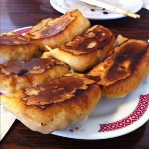 | 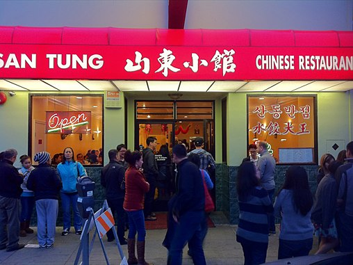 | 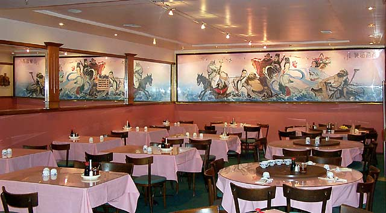 |
U-leesf
Website: http://u-leesf.com/ |
San Tung Chinese Restaurant
Website: http://www.santungrestaurant.com/ | Hunan Homes Restaurant
Website: http://hunanhome.ypguides.net/ |
| 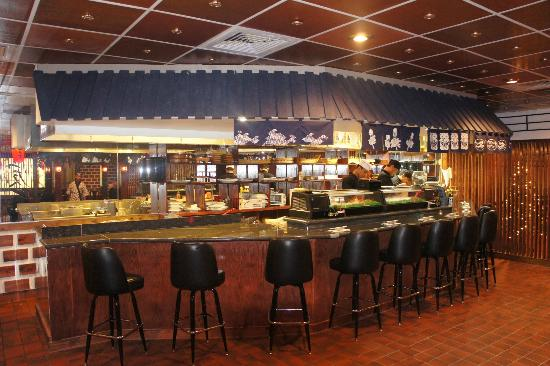 | 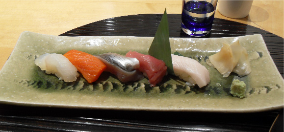 | 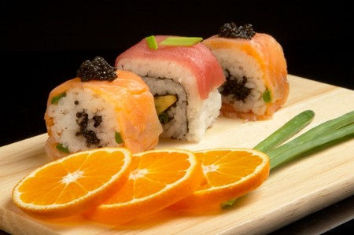 |
Kappa Japanese Restaurant
Website: http://www.kapparestaurant.com/ |
Kiss Seafood
Website: http://www.KissSeaFood.com | Oyaji Restaurant
Website: http://www.Oyaji.com |
| 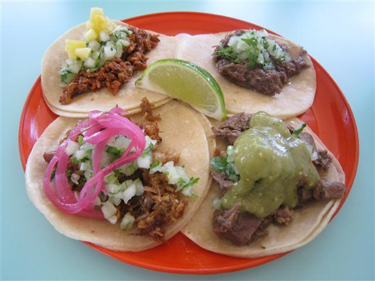 | 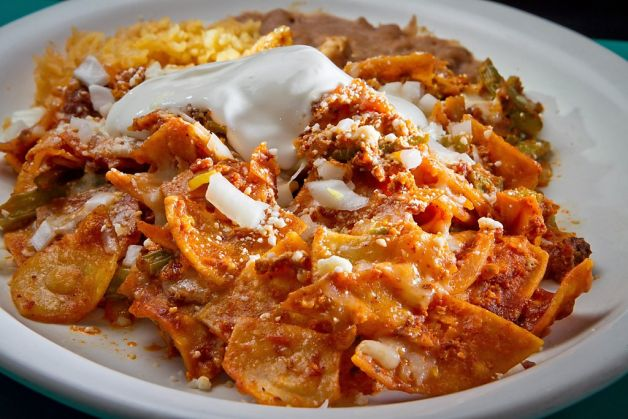 | 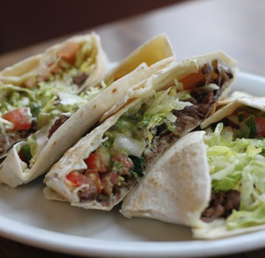 |
La Taqueria
Website: http://www.la-taqueria.com |
San Jalisco
Website: http://www.sanjalisco.com/ | Pancho Villa Taqueria
Website: http://sfpanchovilla.com/ |
| 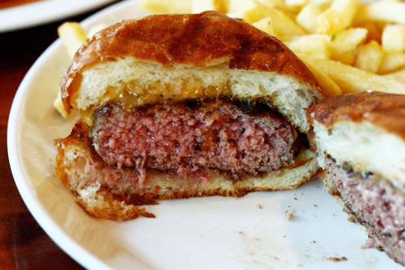 | 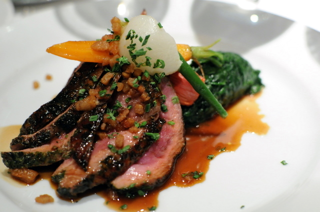 | 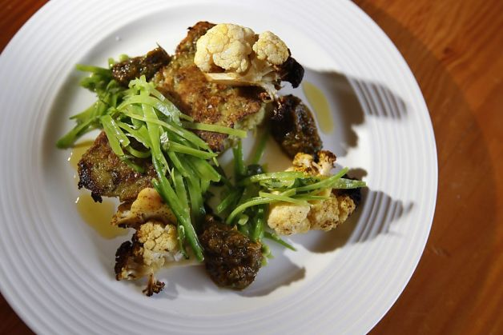 |
Nopa
Website: http://www.nopasf.com/ |
Gary Danko
Website: http://www.garydanko.com/ | Firefly
Website: http://www.fireflyrestaurant.com/ |
| 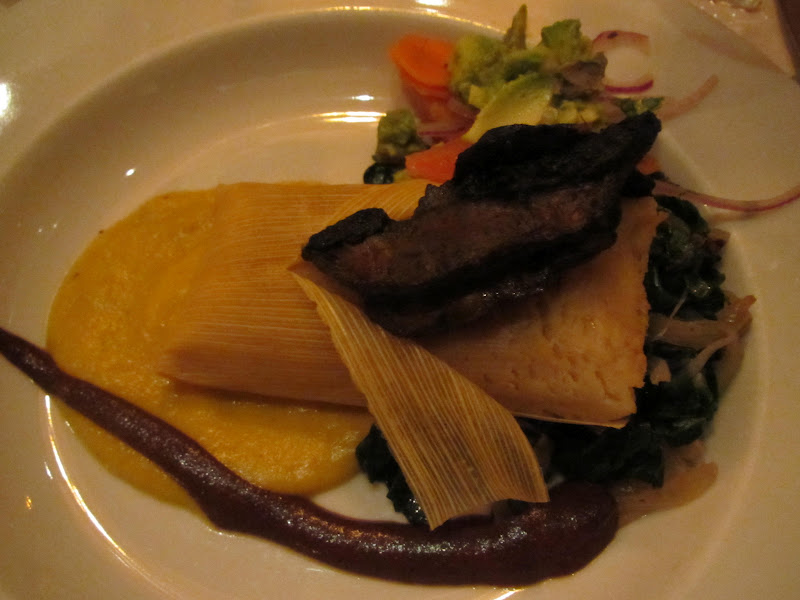 | 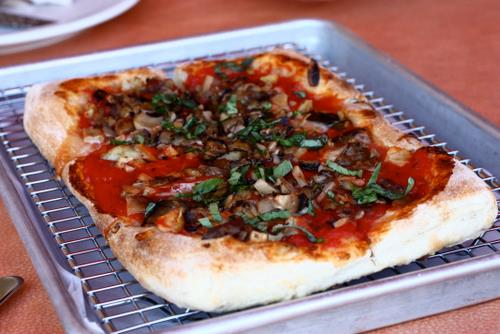 | 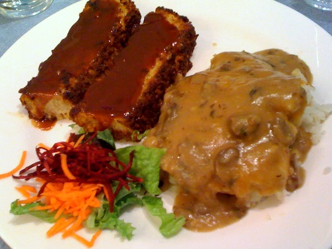 |
Millennium
Website: http://www.millenniumrestaurant.com/ |
Source
Website: http://www.source-sf.com/ | Ananda Fuara
Website: http://www.AnandaFuara.com |
| 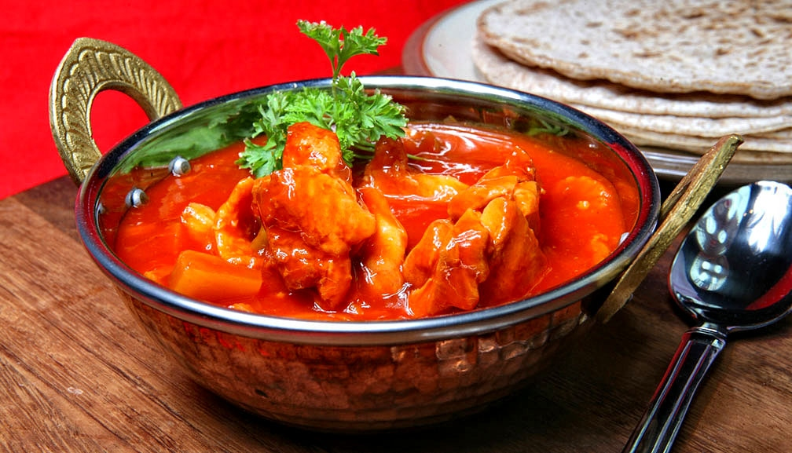 | 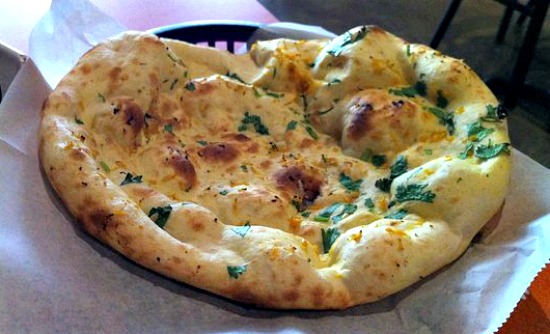 | 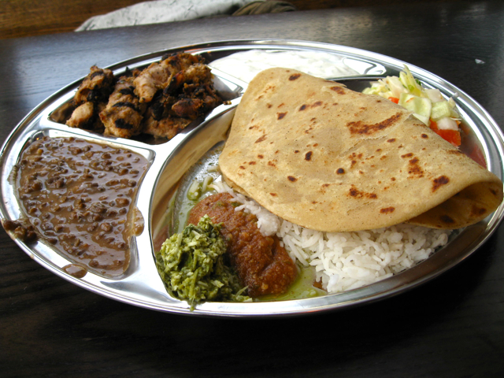 |
Little Delhi
Website: http://littledelhi.net/ |
Pakwan
Website: http://www.pakwanrestaurant.com/ | Kasa Indian Eatery
Website: http://www.kasaindian.com/ |